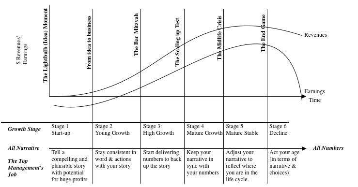

Dr. Aswath Damodaran is a professor of the NYU Stern school of business with his own
containing financial data, articles, and lectures. I have learned tremendously from him.
The Accountant's Role
The role of accounting is (1) to check transactions and operations as they occur, (2) to record them in a consistent manner, and (3) to report the results in standardized form. As much as accounting wants to make itself more relevant and central to businesses, it is
not the role of accounting to (1) forecast the future and (2) value assets or operations. Bluntly put, an accountant is a historian, chronicling events that have already occurred, not predicting the future.
The Structure of a Business
Though there are overlaps between accounting and finance, the way these practicioners look at things differ widely. While accountants may value a company's assets as the money invested in it, finance people value it by estimating the future cash flows that it will generate. That is,
finance is forward-looking. Furthermore, although assets are often categorized by accountants into fixed assets (which are long-lived) and current assets (which are short-term), we prefer a different categorization. The assets that the firm has already invested are called
assets in place, and the assets that the firm is expected to invest in the future are called
growth assets.
-
Assets in place reflect investments that a business has already made. The investments were made in the past, but the value that is attached to them is your estimate of what they will generate for you in the future. For example, in GM or Ford, the assets in place would be the assemply plants and the production line that they already have. For Microsoft, assets in place would be the Windows operating system or Microsoft Office application, stuff that the company has already invested in. Again, it is important to know that we may have spent billions and billions on investing in these assets, but we don't care about that. We are looking for the future cash flows that this asset will generate. This difference between the money invested and the future cash flows may differ. Therefore, the financial valuation of an asset may be much greater or smaller than the accounting metric.
-
Growth assets reflect the value of investments that you expect a business to make in the future. That value is measured by the excess returns you expect to generate on future investments. Though it may seem strange that a firm can get value from investments it has not made yet, high-growth firms get the bulk of their value from these yet-to-be-made investments. The value of growth assets will be higher if you are in a business where you have access to lots of investments that generate excess returns. For example, if Intel is planning to commit $20 billion to build new fabs in Arizona in 2023, the expected return of the new chips produced may be $45 billion, adding $25 billion in value. However, some growth assets' future earnings may deteriorate, decreasing the overall value of the firm. The essence of running a good business is to make sure tocreate value from growth assets and if you cannot find that value, then you stop trying to create value from those assets.
To finance these assets, the firm can raise money from two sources. It can raise funds from investors or financial institutions by promising investors a fixed claim (interest payments) on the cash flows generated by the assets, with a limited to no role int he day-to-day running of the business. This kind of financing is
debt. Alternatively, it can offer a redicual claim on the cash flows (i.e. investors can get what is left over after the interest payments have been made) and a much greater fole in the operation of the business. This is called
equity. Note that these definitions cover both private and public firms, small and large. In a private firm, the debt may take the form of bank loans and equity is the owner's own money. In publicly traded companies, the firm may issue bonds (to raise debt) and common stock (to raise equity).
-
Debt is a contractual agreement that requires that you pay the creditor either a fixed or floating-rate interest payment, along with the principal loan. It is contractual as in you can get sued if you do not pay this debt, unlike a dividend payment. Failure to meet these commitments can result in you going out of business or losing your equity stake. In much of the world, the tax law if tilted to give you a benefit when you borrow (e.g. tax deductible). The most common forms of debt are bank loans and corporate bonds, but there are others.
-
Equity is a residual claim. If you are the sole owner of a business, you are entitled to lay claim on whatever cash flows are left over after everyone else has been paid their contractual dues. However, if we are working with a publicly traded company, then this residual claim is not necessarily going to come to you because there is an intermediary: the management. The managers decide how much of that residual cash flow they will pay you as a dividend, which may be less than, equal to, or more than the residual cash flow. Even though the dividends are not necessarily the residual cash flow, they are a "smoothed out" version of it.
The Corporate Life Cycle
Just as how humans have a life-cycle, corporations also have a life cycle, shown in the diagram below. They go from a baby (start-up) to a teenager (young growth), mature (high growth, mature growth), become adults (mature stable), and grow old (decline).

What is interesting is that the composition of a company's financial balance sheet will look very different depending on what stage it is in, which allows us to predict the future trends of how a company's balance sheet will evolve.
-
Let's look at the asset ratio. For a young start-up, almost all the assets in your balance sheet will be growth assets since you don't have any established assets. As you grow, your assets in place start to accumulate, but it's still your growth assets that drive your value. As you mature as a company, it's the assets in place that will contribute most of the value of your company. There will be a point in time where your growth assets are all going to dry out, which leads into the company's decline. All of your value comes from assets in place (since there are no opportunities for growth assets), and your assets in place themselves start to shrink. If you try to grow, you will only destroy value even more quickly.
-
Let's look at the ratio in how you raise finance. A start-up will have no earnings yet since your assets in place have not kicked in. So the primary way to fund yourself as a business is equity. You cannot make interest rates with promising potential, so you should be funded almost entirely with equity. As you mature as a company (still young growth), you still mainly have growth assets and so should still be funded primarily with equity. As you mature, your capacity to borrow money opens up. You might choose to borrow money since tax laws generally benefit you for borrowing money, increasing the proportion of debt in your sheet. Now as you decline, you're liquidating your assets to pay off both debt and equity. Your composition of debt and equity will reflect how quickly you liquidate.
NYU Stern professor Aswath Damodaran argues that this process is natural, and the worst thing a company can do is not act its age. For young companies, cash burn is a feature, not a bug. With young companies, cash flows will be negative in the early years, requiring new equity to be raised and dilution. As growth starts to easy and companies mature, cash balances, will build up during the transition. When growth starts to ease, cash flows will rise faster than revenues/profits, and as companies take time to adjust, cash balances will balloon out. Once companies adjust to being mature, there will be more cash returned to stockholders. Returning cash to stockholders is not a failure, but a consequence of success.
Cash Flows